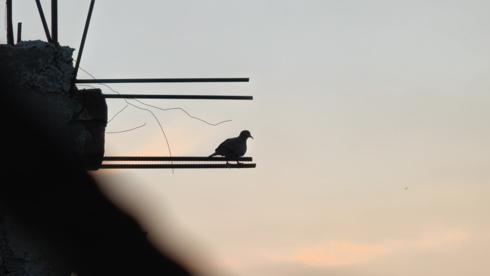

Testing Gemini Omni: Making a Still Bird Fly
I gave Gemini Omni a static silhouette of a dove perched on rusty construction rebar against a pale twilight sky and typed a simple prompt: Make this bird fly.
Generative video models usually struggle with the transition from stillness to complex motion. They either warp the background or turn the subject into a morphing soup. Omni, however, handled the launch mechanics surprisingly well.
The Static Input

The Resulting Motion
Here is the video output generated by the model. Notice how the bird crouches to build upward momentum, spreads its wings, and launches cleanly into the air:
A few observations stand out from this run:
- Physics-Informed Deflection: As the bird flies, the rebar bends swiftly, matching the physics underneath.
- Biomechanical Realism: The wings didn't just sprout and flap. The model captured the preparatory leg crouch and wing extension necessary for takeoff.
- Lighting Consistency: It maintained the lighting conditions well throughout the video.
- Sound Realism and Consistency: The generated audio (such as the wing rustle and wind ambient sound) synced precisely with the visual takeoff, displaying solid multimodal coordination.
Omni's outputs can be hit-or-miss. Sometimes the model fails to produce high-quality videos on the first run, but providing a highly descriptive prompt with rich details yields decent, consistent videos.
Expanding the Test Suite
A simple takeoff is a good baseline, but it doesn't push the model's boundaries. To truly stress-test Gemini Omni, we need to evaluate how it handles physics, logic, and camera control. Here are the five test cases I tried:
- Sequential Logic (Multi-turn): A prompt like "The bird takes off from the rebar, circles around in the sky, and returns to land on the same metal bar." This checks if the model retains the bird's identity and visual memory of its starting location over a longer sequence.
- Environmental Dynamics: A prompt like "Wind blows through the scene, rustling the bird's feathers." This evaluates how the model blends the existing static subject with a simple environmental effect.
- Style and Material Transformation: A prompt like "The bird transforms into a cartoon illustration as it flies." This tests the model's ability to handle stylised frames from a realistic starting photo.
- Decoupled Camera Control: A prompt like "A slow 180-degree panning shot around the bird as it remains perched on the rebar." This verifies if the model can execute camera movement without forcing the subject to change actions.
- Mass and Structural Deflection: A prompt like "The bird takes off with a powerful jump, causing the horizontal rebar to bend and sag temporarily under its launch force." This tests if the model understands mechanics, mass, and physical recoil reactions on structures.
These are the results of those five test runs. If you have interesting prompts that break temporal consistency, drop them in my email below.